Dashboard de Envíos
Descripción.
Se diseñó un Dashboard para ayudar a los usuarios a rastrear y gestionar sus envíos de manera eficiente, mostrando el estado actual de los mismos, permitiendo su rastreo de manera segura, así como ofreciendo información detallada sobre cada uno de ellos y otros servicios de la empresa.
Metodologia empleada: Desing Thinking
1. Empatizar
Los usuarios.
En esta fase, el objetivo fué entender a nuestros usuarios y sus necesidades por medio de entrevistas y encuestas a los usuarios principales, gerentes de logística, operarios de almacén y clientes finales. Pasamos tiempo observando cómo los usuarios actuales interactúan con el sistema de envíos existente, identificando puntos de dolor y áreas de oportunidad.
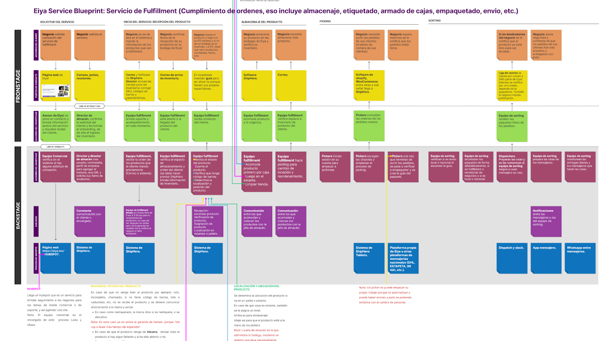Service Blueprint de servicio de logística para despachar un envío en bodega.
Hallazgos
Los usuarios actuales de la empresa son emprendimientos pequeños y medianos, cuyos líderes tienen entre 25 y 35 años. En muchas ocasiones, la persona que registra los envíos no es la misma que contrata el servicio; este usuario tiene entre aproximadamente 45 y 57 años.
Características de la persona que administra el servicio de envíos:
- No es una persona tecnológica.
- Principalmente usa el ordenador.
- Los usuarios provienen de diferentes marketplaces como Shopify, WooCommerce, TiendaNube, entre otros.
- Muchos también venden por Facebook e Instagram y llevan un control mediante Excel.
- Están interesados en vender en Amazon y MercadoLibre.
- Los usuarios están interesados en soluciones de envíos rápidos para el mismo día o el día siguiente.
- La persona que contrata el servicio valora mucho los envíos ecológicos (en bicicleta), que es el principal diferenciador de esta empresa.
- Los usuarios con mayor volumen de envíos tienen problemas para controlar qué envíos ya fueron empaquetados, cuáles se solicitó una guía de envío y cuáles ya fueron entregados a la paquetería.
Benchmark de principales competidores.
2. Definir
Problema.
La empresa comenzó realizando envíos a través de WhatsApp; posteriormente, tercerizó una aplicación que permitió a sus usuarios solicitar envíos mediante un formulario, lo que ha generado los siguientes problemas urgentes:
- Los negocios con un gran volumen de envíos pierden mucho tiempo al solicitarlos manualmente mediante un formulario.
- Los usuarios tienen dificultades con la facturación de los servicios de envío y la consulta de su saldo.
- Los clientes finales enfrentan problemas al no poder rastrear sus envíos, realizar cambios en su dirección, programar la entrega de sus pedidos o comunicarse con su mensajero para coordinar la entrega.
- Es necesario ofrecer y visualizar el servicio de logística a los clientes con un alto volumen de envíos.
Problema central
Los usuarios necesitan una solución que les permita gestionar y monitorear los envíos de manera eficiente y en tiempo real, mejorando la transparencia y la comunicación en todo el proceso logístico.
3. Idear
Objetivos.
Para poder priorizar la generación de soluciones para los problema definidos, se realizo una matriz de priorización con los stakeholders y el equipo de desarrollo, asi como una estimación colaborativa con ayuda de "Srum Poker" para poder estimar el esfuerzo requerido para cada historia de usuario.
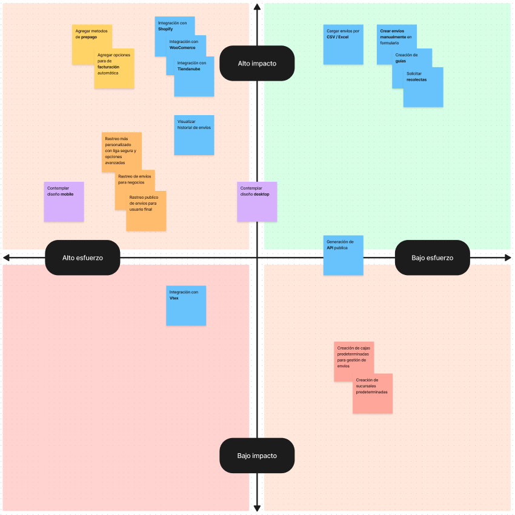Matriz de priorización para backlog de funcionalidades de dashboard.
La priorización final fue la siguiente:
- Permitir a los usuarios solicitar envíos automatizados desde sus tiendas en línea, comenzando con Shopify, la plataforma más utilizada por nuestros clientes.
- Continuar permitiendo la creación de envíos manuales y por CSV/Excel, ya que requieren menos esfuerzo técnico y son muy valiosas para los usuarios.
- Agregar métodos de pago automáticos y opciones de facturación automática, ya que esto es un punto de dolor importante para el usuario y el negocio.
- Crear un modelo de comunicación y rastreo entre el punto de compra, la entrega y la mensajería.
- Facilitar la exposición de otros servicios a usuarios recurrentes.
Representación de Scrum Poker
4. Prototipar
Diseño Visual.
Iniciamos con la comprensión técnica de los requerimientos necesarios para sincronizar los pedidos con los procesos internos de la empresa, como la creación de guías, la solicitud de recolección de paquetes y, finalmente, la entrega. Algunos de estos procesos se representaron mediante wireframes de baja fidelidad, para luego diseñar prototipos de alta fidelidad en Figma y entregarlos al equipo de desarrollo.
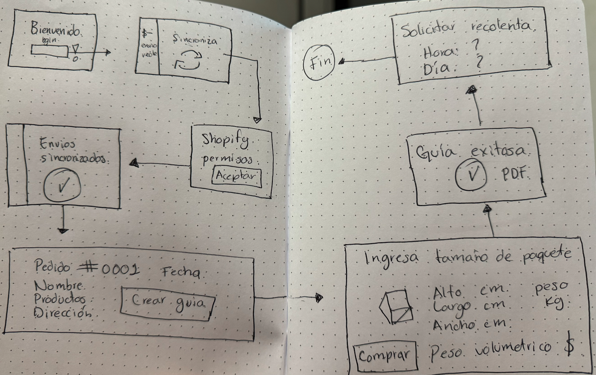Wireframe inicial del flujo de sincronización con Shopify
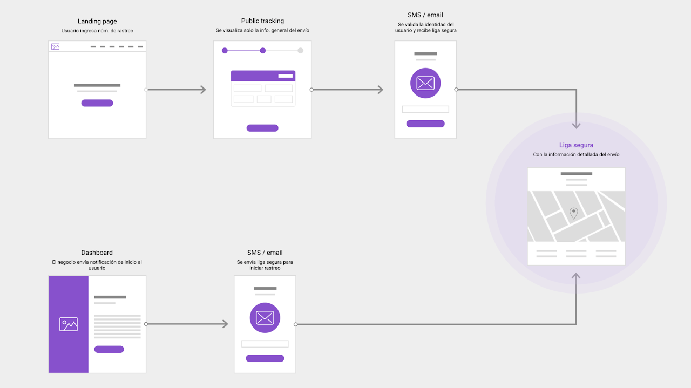Flujo de rastreo publico y "liga segura"
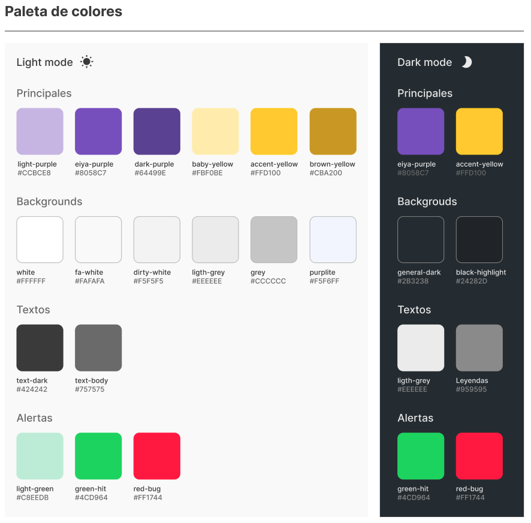Colores del sistema
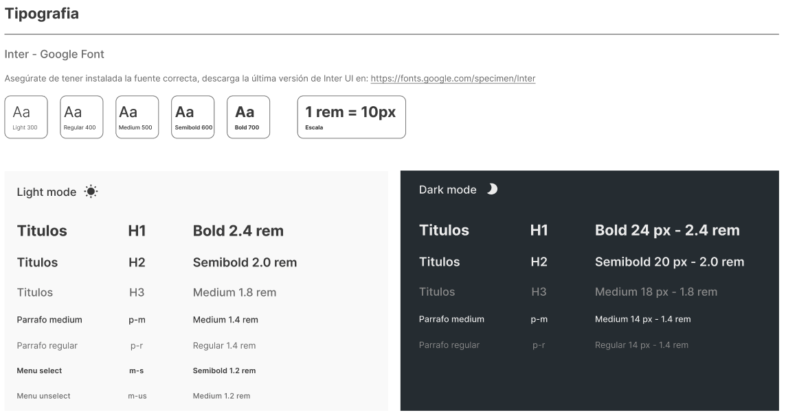Tipografia
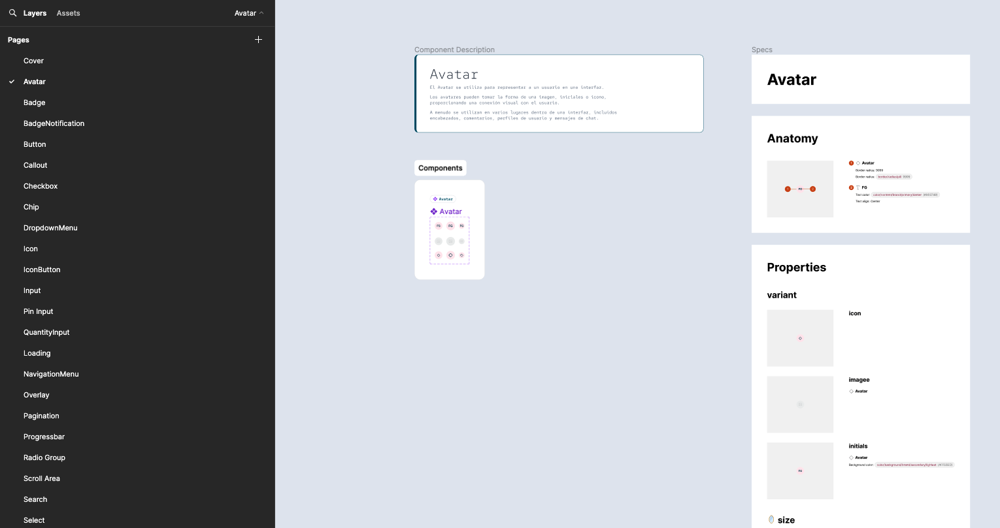Desing system
5. Testear
Momentos clave.
Realizamos pruebas de usabilidad con los usuarios clave para evaluar la efectividad del proyecto y recolectamos feedback de stakeholders para mejorar el diseño y la funcionalidad.
- Los usuarios apreciaron la claridad y la actualización en tiempo real de sus pedidos en el dashboard, valoraron las notificaciones claras, pero solicitaron más opciones de personalización.
- Los operarios de almacén encontraron intuitiva la interfaz, aunque sugirieron mejoras en la sección de actualización de estados.
Pantalla inicial del Dashboard
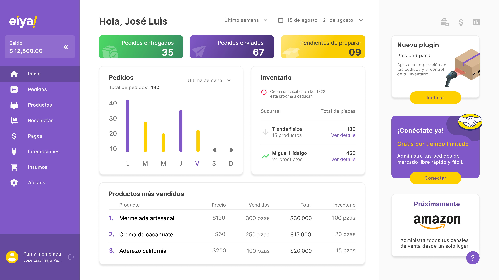Pantalla inicial con Analytics
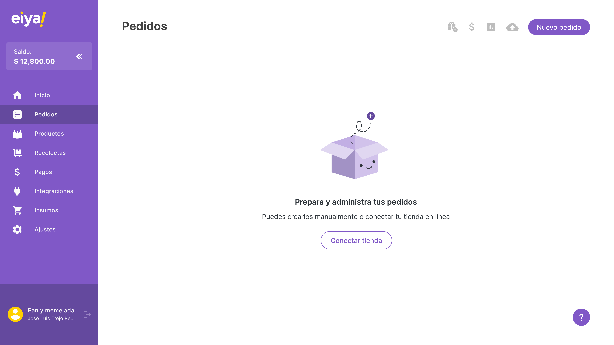Estado vacio sección pedidos
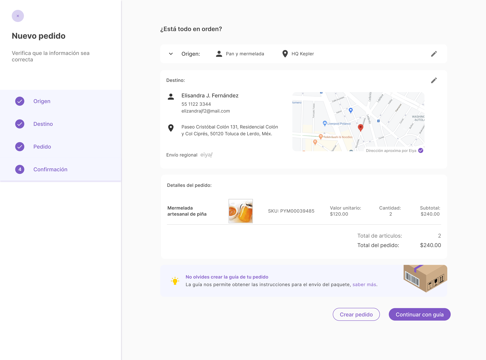Nuevo pedido

Detalle de pedido
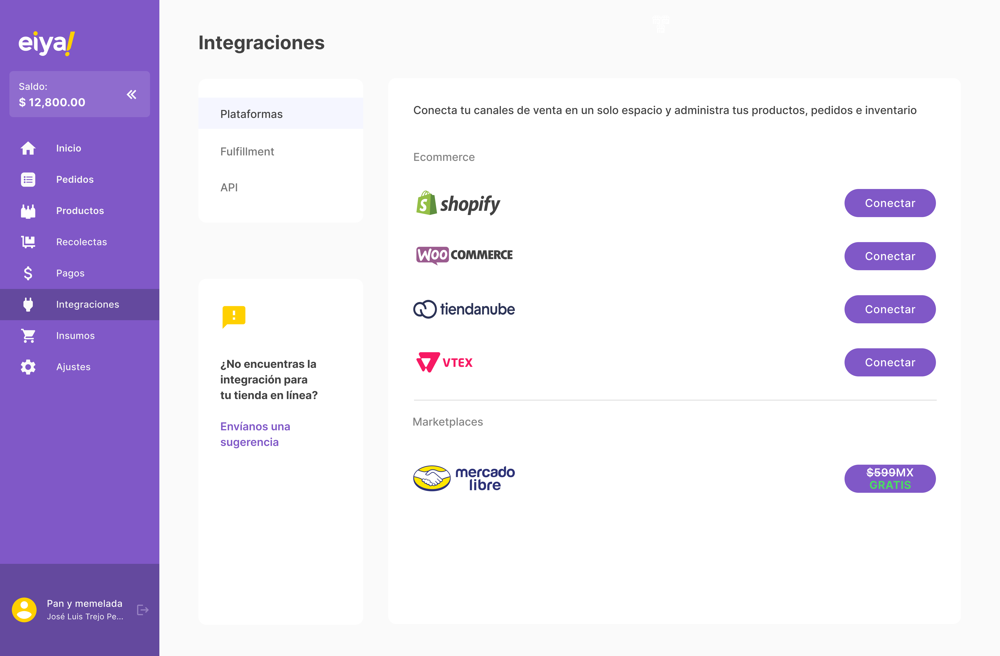Integraciones
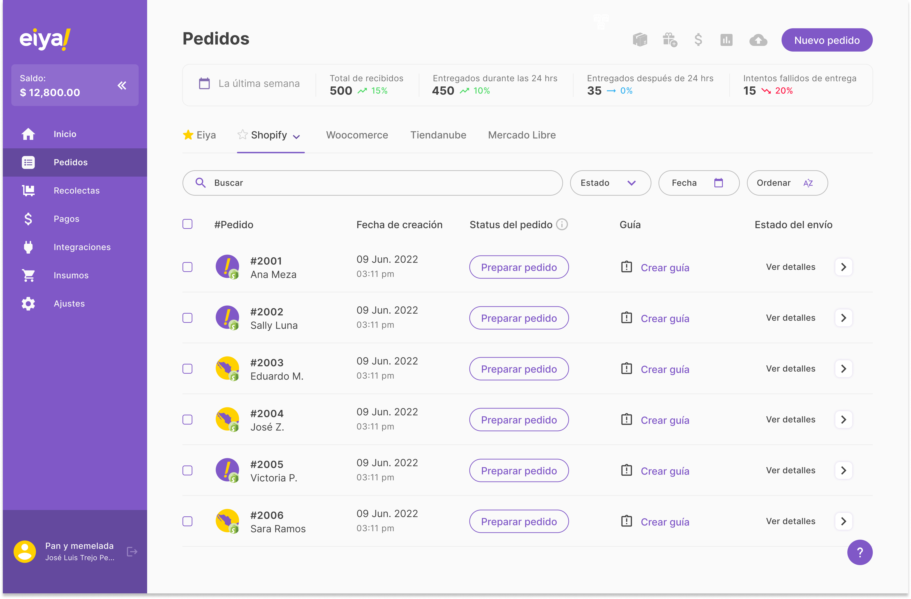Integración de pedidos con shopify
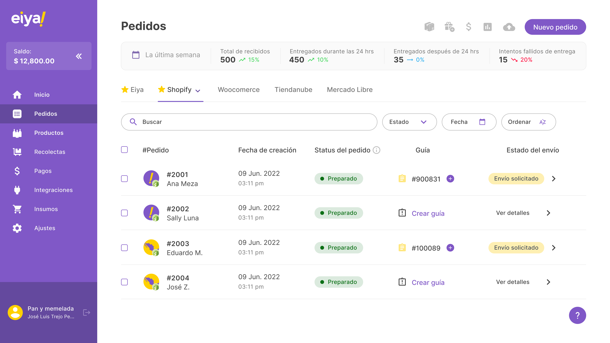Sección de pedidos sincronizados con shopify

Generación de guias con CSV

Sección de pagos y facturación
Impacto y metricas del proyecto.
- Mejora en la Eficiencia Operativa
- Tiempo promedio para actualizar el estado de un envío: 15 minutos
- Número de errores en la actualización del estado: 25 errores por semana
- Tiempo promedio para actualizar el estado de un envío: 5 minutos (reducción del 66%)
- Número de errores en la actualización del estado: 5 errores por semana (reducción del 80%)
- Incremento en la Satisfacción del Cliente
- Puntuación promedio de satisfacción del cliente: 3.5/5
- Número de quejas relacionadas con la visibilidad de envíos: 50 quejas por mes
- Puntuación promedio de satisfacción del cliente: 4.5/5 (incremento del 28.6%)
- Número de quejas relacionadas con la visibilidad de envíos: 10 quejas por mes (reducción del 80%)
- Aumento en la Productividad del Personal
- Número de envíos gestionados por operario al día: 50
- Tiempo dedicado a la resolución de incidencias por operario: 3 horas al día
- Número de envíos gestionados por operario al día: 80 (incremento del 60%)
- Tiempo dedicado a la resolución de incidencias por operario: 1 hora al día (reducción del 67%)
- Antes de implementar el dashboard
- Después de Implementar el Dashboard:
- Antes de implementar el dashboard
- Después de Implementar el Dashboard:
- Antes de implementar el dashboard
- Después de Implementar el Dashboard:
Conclusiones
Implementar el dashboard mejoró muchísimo la eficiencia operativa. Ahora, actualizar el estado de los envíos es mucho más rápido y se cometen muchos menos errores. Además, la transparencia y las notificaciones en tiempo real hicieron que la experiencia del cliente mejorara notablemente, lo que se tradujo en mayor satisfacción y menos quejas.
Estos resultados muestran el impacto positivo que el dashboard de envíos tuvo en diferentes áreas del negocio. Los datos demostrados son útiles para justificar la inversión en soluciones tecnológicas y para demostrar el valor del diseño centrado en el usuario en futuros proyectos.
Al estar en constante comunicación con nuestros usuarios, nos dimos cuenta de que podemos ayudarlos a expandirse. Con las integraciones ya implementadas, podemos convertirnos en una aplicación SaaS desde la cual puedan administrar sus envíos en un solo lugar.